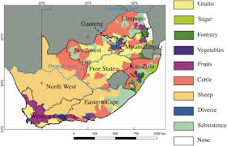

Unit Overview
This unit will explore the growth of crops and agriculture within Southern Africa, as well as the opportunities and challenges presented by them. We will explore the agricultural hearths of the region, studying the different types of crops and the Orange River. There will be a study on the impacts of the agricultural revolutions on the region.
5.1: Agricultural Hearths
This section will recognize the different crops that originated in Southern Africa and their contributions to development within the region. There will be a case study of the Orange River to highlight its agricultural prominence.
5.2: Agricultural revolutions and Their Effects on Southern Africa
This section will explore the effects of the Second Agricultural Revolution and Green Revolution on Southern Africa. There will be a case study on the degree to which each made an impact.
5.3: Business within agriculture
This unit will highlight prominent commodity crops within the region and how Southern Africa takes advantage of these resources to make profits.
5.4: Food insecurity
This unit will explore environmental consequences of agricultural practices, such as pesticide runoff and sustainability concerns such as food shortages.
Instructional Tool - GIS/Maps
Students will research and map the major agricultural hearths of Southern Africa and identify the key crops that originated in the region.
Case Study - Second Agricultural and Green Revolutions
These revolutions maximised food production all throughout the world, with high-yield crops and new forms of machinery being introduced to boost agricultural yields. These effects of these revolutions, however, were not felt the same throughout the world. In Southern Africa, countries were not able to keep pace with more developed regions, exacerbating inequalities throughout the world as countries such as Lesotho were unable to successfully implement Green Revolution technology. Issues involving colonial exploitation and agricultural runoff persisted during this time period as well, as new technology paved the way for wealthier nations to take advantage of cheap labor within Southern Africa.